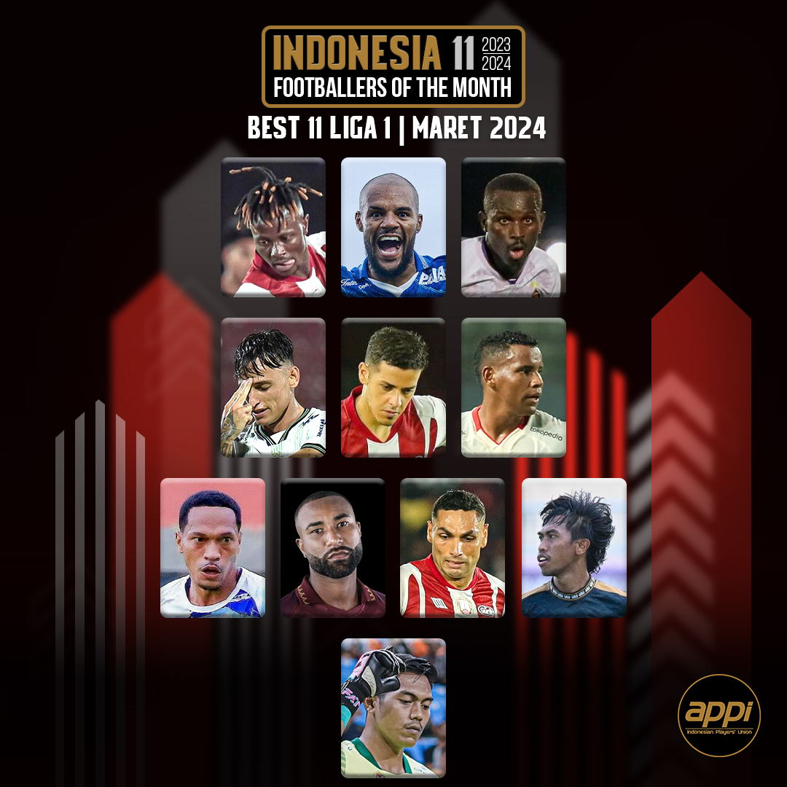
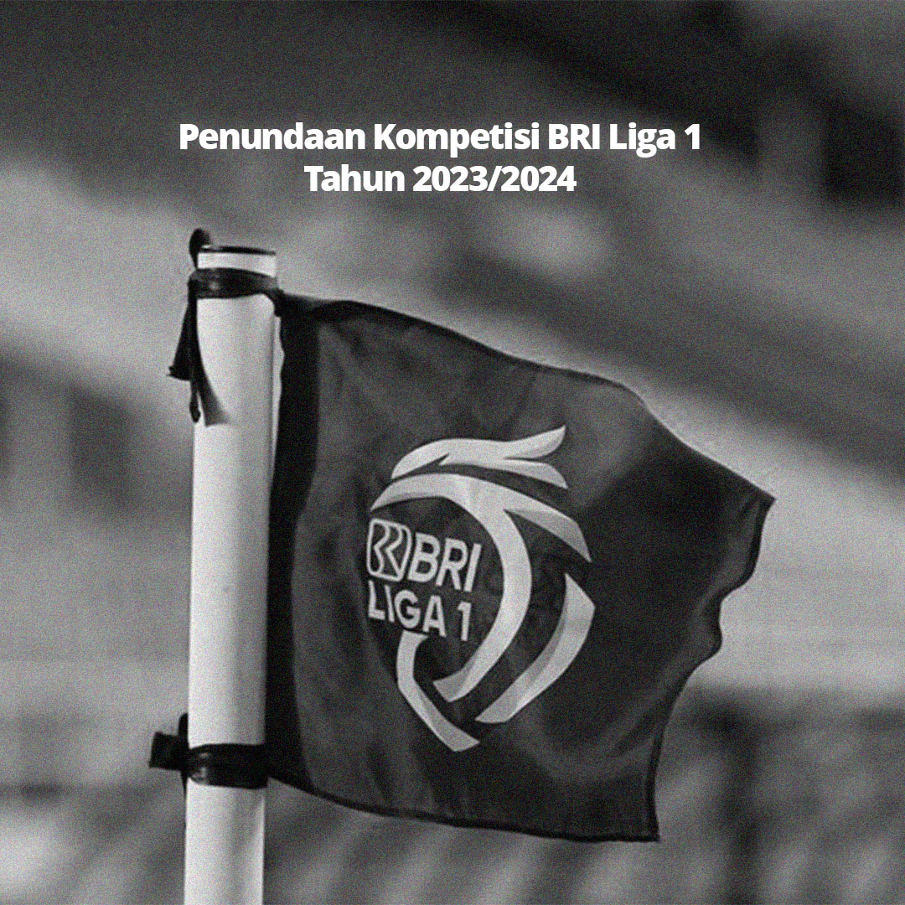
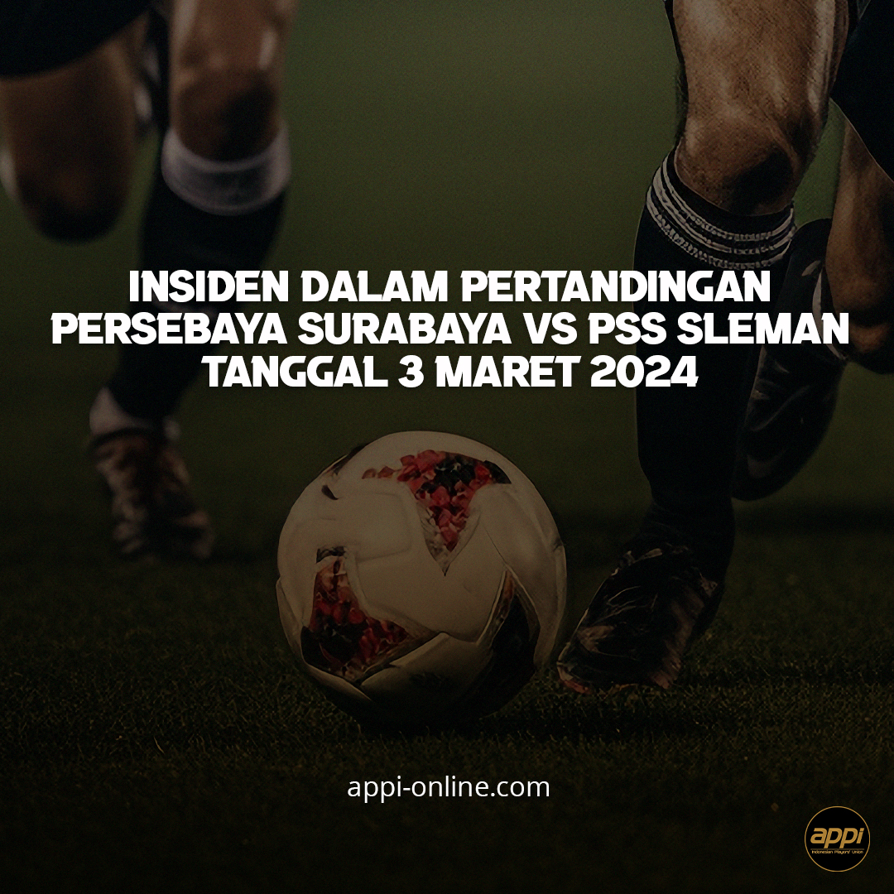

NEWS
APPI Footballers Of The Month – Maret 2024
Jakarta, 22 Maret 2024— Penghargaan bulanan APPI Indonesia 11: Footballers of the Month (FOTM) untuk kompetisi Liga 1 musim 2023/2024 dituangkan dalam beberapa kategori pemilihan yakni: Best Footballer, Fans Favorite Footballer, dan Best 11. Proses pemilihan dikurasi berdasarkan statistik penampilan seluruh pemain Liga 1, yang bekerjasama dengan Statoskop Indonesia (Statoskop.id). Untuk kategori Best 11, dengan formasi 1-4-3-3 pemain dipilih berdasarkan statistik. Best Footballer, pemenang dipilih langsung oleh tiap-tiap kapten dari 18 Klub Liga 1, dan untuk kategori Fans Favorite Footballer dipilih langsung secara online oleh seluruh penggemar sepakbola Indonesia melalui website APPI: Nominasi pemenang APPI FOTM bulan Maret 2024 adalah: Andika Ramadhani – Persebaya Surabaya David Da Silva – Persib Bandung Moussa Sidibe – Persis Solo Flavio Silva – Persik Kediri Eber Bessa – Bali United
Penundaan Kompetisi BRI Liga 1 Tahun 2023/2024
akarta, 31 Maret 2024 – Keputusan PSSI melalui rapat darurat Exco PSSI yang dituangkan dalam surat 1367/UDN/815/III-2024, yang memutuskan untuk menunda sementara bergulirnya kompetisi Liga 1 2023/2024 dikarenakan Timnas Indonesia U-23 yang akan tampil di Piala Asia U-23 2024 di Qatar pada tanggal 15 April sampai dengan 3 Mei 2024, merupakan sesuatu yang sangat mendadak yang mengakibatkan perubahan jadwal kompetisi yang sangat signifikan. Hal ini menandakan bahwa Sepakbola Indonesia belum dikelola dengan terstruktur dan inkonsisten. Para pesepakbola yang bermain di Liga 1 yang mayoritas kontraknya akan berakhir pada bulan April dan Mei 2024, telah banyak menyampaikan laporan dan kekhawatirannya kepada APPI. Penundaan Kompetisi ini tentunya memiliki efek domino yang akan menimbulkan masalah baru bukan saja hanya pembengkakan biaya bagi Klub, tetapi juga tentunya di dalam hubungan kontraktual antara klub dengan pemain.
Insiden dalam Pertandingan Persebaya Surabaya vs PSS Sleman Tanggal 3 Maret 2024
Jakarta, 6 Maret 2024 – Atas insiden yang terjadi dalam laga Persebaya Surabaya melawan Klub PSS Sleman dalam gelaran Liga 1 2023/2024 di Gelora Bung Tomo pada hari Minggu, 3 Maret 2024, APPI sangat menyayangkan atas adanya insiden yang melibatkan Wahyudi Hamisi (PSS Sleman) dan Bruno Moreira (Persebaya). APPI telah memberikan teguran keras kepada Wahyudi Hamisi atas tindakan berbahaya yang ia lakukan yang dapat mencederai sesama pemain dan merusak nilai sportivitas dalam olahraga. Saat ini telah ada proses pemanggilan (hearing) kepada 2 pemain bersangkutan oleh Komisi Disiplin PSSI. APPI akan terus memonitor kasus ini dan meminta kepada para pemain untuk menghormati dan mengikuti seluruh prosedur disiplin yang ada. Sebagai wadah dari para pesepakbola profesional Indonesia, APPI tentunya juga memiliki fungsi memberikan edukasi kepada para anggotanya, dan terkait hal ini melalui para pesepakbola juga telah berulang kali dan akan terus menggaungkan kampanye anti kekerasan di dalam lapangan yang bertajuk “Kita Satu Profesi”. Kampanye ini memiliki pesan utama bahwa menjadi pesepakbola adalah impian seluruh pemain profesional dan inti penting dari sebuah olahraga adalah Sportivitas. Menjadi sangat penting bagi para pemain untuk selalu menghormati profesinya di dalam lapangan dan untuk menghindari tindakan-tindakan yang dapat merugikan karir mereka dan juga rekan-rekan sejawatnya.
PICTURE

